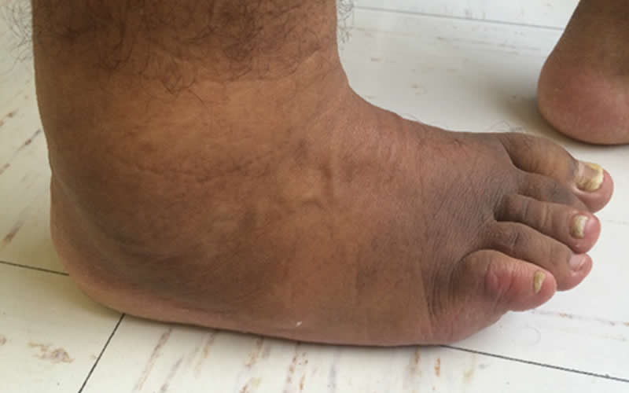
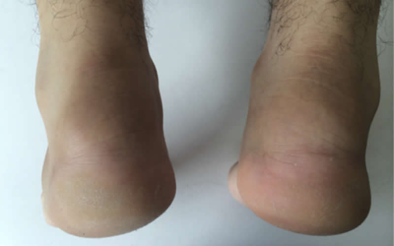
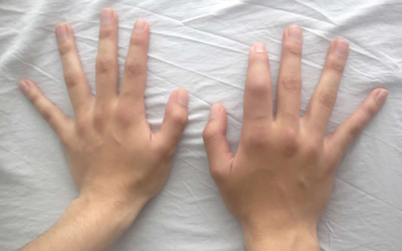
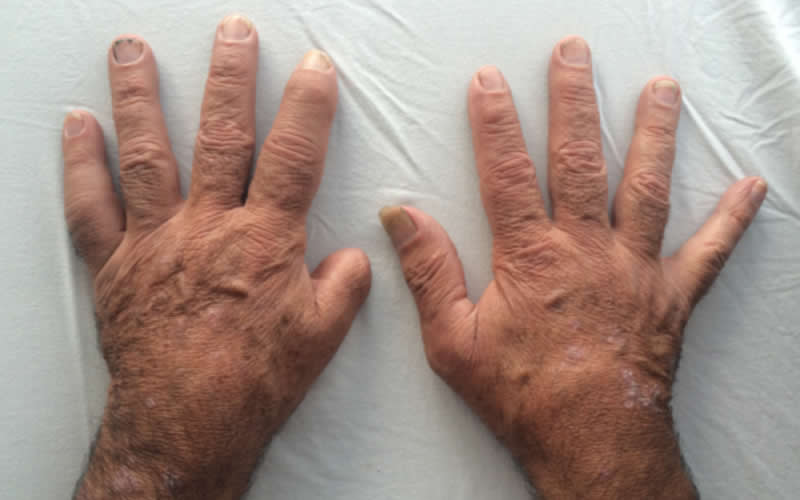

<div class="pages">
	<div data-page="projects" class="page no-toolbar no-navbar">
		<div class="page-content">
			<div class="navbarpages">
				<div class="nav_left_logo"><a href="index.html"></a></div>
				<div class="nav_right_button"><a href="menu.html"></a><a href="#" class="back" data-force="true"></a></div>
			</div>
			<div id="pages_maincontent">
				<h2 class="page_title">Artritis psoriásica</h2>
				<div class="page_content">
					<blockquote> Definición </blockquote>
					<p>La artritis psoriásica es una artropatía inflamatoria asociada con psoriasis. Fue considerada inicialmente como una variante de la artritis reumatoide, pero posteriormente emerge como una entidad clínica distinta siendo reconocida por parte del Colegio Americano de Reumatología como una entidad nosológica independiente a partir de 1964</p>
					<h3>Epidemiología</h3>
					<p>La prevalencia de artritis psoriásica varía de acuerdo a la población estudiada y al método de clasificación de los pacientes. En general, la prevalencia de artritis psoriásica en la población general varía del 0,001 (Japón) al 0,42% (Italia). Usando los criterios de clasificación de CASPAR, se documentó una prevalencia de artritis psoriásica en población general de 0,07% en Argentina y del 0,16% en Estados Unidos. En cuanto a la proporción de pacientes con psoriasis, comprometidos con artritis psoriásica la prevalencia varía entre el 6 y el 42% (estudios de Europa, Estados Unidos y Sur África), pero se han encontrado valores menores de prevalencia en población Asiática (1 - 9%). </p>
					<blockquote>Cuadro clínico</blockquote>
					<h3>Compromiso axial:</h3>
					<p>El dolor de espalda está presente en 18 a 46% de los pacientes con artritis psoriásica. La sacroiliítis radiológica se presenta en 11 a 37% de los pacientes.  El dolor lumbar, así como sucede en espondilitis anquilosante es usualmente de características inflamatorias (predominio matutino, mejora con ejercicio, empeora con el reposo, pudiéndose asociar además con rigidez espinal). </p>
					<h3>Artritis periférica:</h3>
					<p>Puede presentarse con un patrón de compromiso mono, oligo o poliarticular. En etapas tempranas de la enfermedad, usualmente se presenta oligoartritis asimétrica con principal compromiso de articulaciones grandes, en especial tobillos y rodillas.</p>
					
					<p>Inflamación del tobillo derecho en paciente con artritis psoriásica. Nótese el compromiso inflamatorio de la fascia plantar y el compromiso de las uñas por psoriasis. Colección particular Daniel Fernández Ávila, M.D. MSc.</p>
					<p>Los patrones de compromiso, clásicamente descritos por Moll y Wright incluyen:</p>
					<ul class="simple_list">
						<li>Artritis con compromiso de las articulaciones intefalángicas distales (5%)</li>
						<li>Oligoartritis asimétrica (70%)</li>
						<li>Poliartritis simétrica (15%)</li>
						<li>Artritis mutilante (5%)</li>
					</ul>
					<p>La mayoría de los pacientes cursan con uno o más patrones y pueden cambiar de patrón del compromiso articular durante su seguimiento.</p>
					<h3>Compromiso periarticular:</h3>
					<h4>Entesitis:</h4>
					<p>La inflamación de los puntos de inserción de los tendones a los huesos (entesitis), es un hallazgo común en las espondiloartritis, sin embargo es mas común entre pacientes con artritis psoriásica, comparados con pacientes con espondilitis anquilosante. Las zonas mas comúmnente afectadas son el tendón de Aquiles y la fascia plantar. Se presenta en el 25 a 53% de los pacientes durante el curso de su enfermedad.</p>
					
					<p>Entesitis del Aquiles en paciente con artritis psoriásica. Daniel Fernández Ávila, MD. MSc.</p>
					<h4>Dactilitis:</h4>
					<p>La inflamación de un dedo como una salchicha (dactilitis) es el resultado de la inflamación de tendones y articulaciones en un dedo. Se presenta en el 32 a 48% de los pacientes con artritis psoriásica. Es un importante hallazgo en artritis psoriásica puesto que se relaciona con mayor daño articular. </p>
					
					<p>Dactilitis del segundo dedo de la mano derecha en paciente con artritis psoriásica. Colección particular Daniel Fernández Ávila, M.D. MSc.</p>
					
					<p>Dactilitis del segundo y quinto dedo de la mano izquierda en paciente con artritis psoriásica. Nótese las placas de psoriasis en piel. Colección particular Daniel Fernández Ávila, M.D. MSc</p>
					<h3>Compromiso extra-articular</h3>
					<h4>Uveítis:</h4>
					<p>Se presenta en 4 a 18% de los pacientes con artritis psoriásica. Puede ser bilateral, crónica y rara vez es posterior.</p>
					<h4>Hallazgos paraclínicos.</h4>
					<p>Los hallazgos de laboratorio en artritis psoriásica son inespecíficos. Como una de las antes denominadas espondiloartropatías seronegativas, los pacientes con artritis psoriásica usualmente cursan con factor reumatoide negativo, aunque este puede ser detectado entre el 5 y 9% de los pacientes. Se puede detectar elevación de reactantes de fase aguda (VSG y PCR) hasta en 40% de los pacientes. Otras pruebas de inmunología se pueden detectar en pacientes con artritis psoriásica, como es el caso de los anticuerpos anti péptido cíclico citrulinado (8 a 16%), ANAS (14%) y anti DNA (3%).</p>
                    <a href="tratamiento-ap.html" class="button_full">Tratamiento de la AP</a>
					<h3>Lecturas recomendadas</h3>
					<ol class="simple_list">
						<li>Fernández-Ávila DG, et al. Diagnóstico de artritis psoriásica. Rev Col Reumatol 2009;16:342-51</li>
						<li>Gladman D. Early psoriatic arthritis. Rheu Dis Clin N Am 2012;38:373-86</li>
						<li>Taylor W, et al. Classification criteria for psoriatic arthritis. Arthitis Rheum 2006;54:2665-73</li>
					</ol>
					<ul class="features_list">
						<li><a href="cont_espondilitis.html"><span>Ant - Espondilitis anquilosante</span></a></li>
						<li><a href="cont_espondiloartritis.html"><span>Sig - Espondiloartritis asociada a EII</span></a></li>
					</ul>
					<a href="menu.html" class="button_full">Menú principal</a> </div>
			</div>
		</div>
	</div>
</div>
